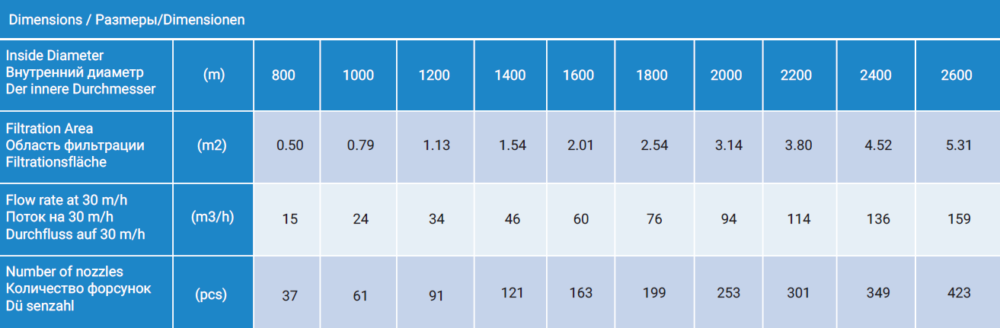
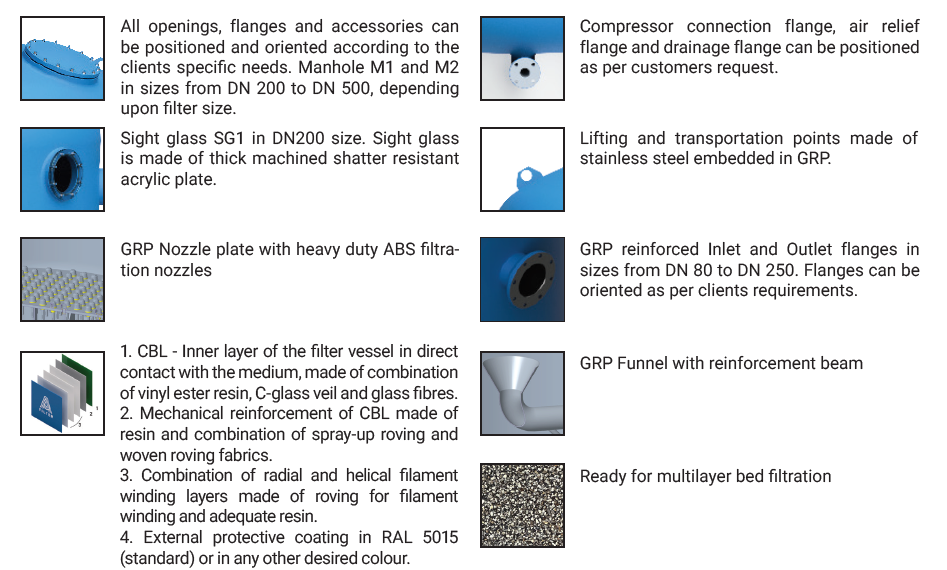

DIN SERIES
GENERAL INFORMATION
DIN Series filters can be manufactured in diameters
from 800 to 2.600 mm with top lid and a manhole
on the side. Filters are designed according to DIN
19605/19643/18820 standard and constructed according
to AD-Merkablatt N1 and BS.
They are equipped with nozzle plate with filter nozzles.
Flanges, interior components, tubing and support
legs are made of GRP. Filtration media height
ranges from 1.200 to 1.500 mm.
Maximum working pressure of the vessel is 2,5 bar,
4 and 6 bar are possible as well, and it is submitted
to pressure tests of up to 50% more than maximum
working pressure.
⚬ DIN 19605/19643/18820
⚬ Vinyl ester lining as standard
⚬ Diametar from 800mm to 2600mm
⚬ Pressure tested up to 50% more than maximum working pressure
⚬ Bed height 1200mm or 1500 mm
⚬ Manholes, Inlet, Outlet and other connections can be oriented as per customers wishes
DIMENSIONS
DETAILS
+381 11 71 20 800
office@afilter.rs
www.afilter.rs
Narodnih Heroja 42 11070 Belgrade,Serbia
Copyright © Afilter 2020